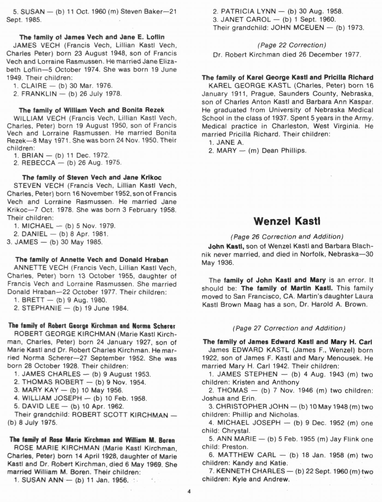

The book · Supplementary Section (1986)
Supplement page 4 The family of James Vech and Jane E. Loflin


Transcription
- SUSAN — (b) 11 Oct. 1960 (m) Steven Baker—21 Sept. 1985.
The family of James Vech and Jane E. Loflin
JAMES VECH (Francis Vech, Lillian Kastl Vech, Charles Peter) born 23 August 1948, son of Francis Vech and Lorraine Rasmussen. He married Jane Elizabeth Loflin—5 October 1974. She was born 19 June 1949. Their children:
- CLAIRE — (b) 30 Mar. 1976.
- FRANKLIN — (b) 26 July 1978.
The family of William Vech and Bonita Rezek
WILLIAM VECH (Francis Vech, Lillian Kastl Vech, Charles, Peter) born 19 August 1950, son of Francis Vech and Lorraine Rasmussen. He married Bonita Rezek—8 May 1971. She was born 24 Nov. 1950. Their children:
- BRIAN — (b) 11 Dec. 1972.
- REBECCA — (b) 26 Aug. 1975.
The family of Steven Vech and Jane Krikoc
STEVEN VECH (Francis Vech, Lillian Kastl Vech, Charles, Peter) born 16 November 1952, son of Francis Vech and Lorraine Rasmussen. He married Jane Krikoc—7 Oct. 1978. She was born 3 February 1958. Their children:
- MICHAEL — (b) 5 Nov. 1979.
- DANIEL — (b) 8 Apr. 1981.
- JAMES — (b) 30 May 1985.
The family of Annette Vech and Donald Hraban
ANNETTE VECH (Francis Vech, Lillian Kastl Vech, Charles, Peter) born 13 October 1955, daughter of Francis Vech and Lorraine Rasmussen. She married Donald Hraban—22 October 1977. Their children:
- BRETT — (b) 9 Aug. 1980.
- STEPHANIE — (b) 19 June 1984.
The family of Robert George Kirchman and Norma Scherer
ROBERT GEORGE KIRCHMAN (Marie Kastl Kirchman, Charles, Peter) born 24 January 1927, son of Marie Kastl and Dr. Robert Charles Kirchman. He married Norma Scherer—27 September 1952. She was born 28 October 1928. Their children:
- JAMES CHARLES — (b) 9 August 1953.
- THOMAS ROBERT — (b) 9 Nov. 1954.
- MARY KAY — (b) 10 May 1956.
- WILLIAM JOSEPH — (b) 10 Feb. 1958.
- DAVID LEE — (b) 10 Apr. 1962.
Their grandchild: ROBERT SCOTT KIRCHMAN — (b) 8 July 1975.
The family of Rose Marie Kirchman and William M. Boren
ROSE MARIE KIRCHMAN (Marie Kastl Kirchman, Charles, Peter) born 14 April 1928, daughter of Marie Kastl and Dr. Robert Kirchman, died 6 May 1969. She married William M. Boren. Their children:
- SUSAN ANN — (b) 11 Jan. 1956.
- PATRICIA LYNN — (b) 30 Aug. 1958.
- JANET CAROL — (b) 1 Sept. 1960.
Their grandchild: JOHN MCEUEN — (b) 1973.
(Page 22 Correction)
Dr. Robert Kirchman died 26 December 1977.
The family of Karel George Kastl and Pricilla Richard
KAREL GEORGE KASTL (Charles, Peter) born 16 January 1911, Prague, Saunders County, Nebraska, son of Charles Anton Kastl and Barbara Ann Kaspar. He graduated from University of Nebraska Medical School in the class of 1937. Spent 5 years in the Army. Medical practice in Charleston, West Virginia. He married Pricilla Richard. Their children:
- JANE A.
- MARY — (m) Dean Phillips.
Wenzel Kastl
(Page 26 Correction and Addition)
John Kastl, son of Wenzel Kastl and Barbara Blachnik never married, and died in Norfolk, Nebraska—30 May 1936.
The family of John Kastl and Mary is an error. It should be: The family of Martin Kastl. This family moved to San Francisco, CA. Martin's daughter Laura Kastl Brown Maag has a son, Dr. Harold A. Brown.
(Page 27 Correction and Addition)
The family of James Edward Kastl and Mary H. Carl
James EDWARD KASTL (James F., Wenzel) born 1922, son of James F. Kastl and Mary Menousek. He married Mary H. Carl 1942. Their children:
- JAMES STEPHEN — (b) 4 Aug. 1943 (m) two children: Kristen and Anthony
- THOMAS — (b) 7 Nov. 1946 (m) two children: Joshua and Erin.
- CHRISTOPHER JOHN — (b) 10 May 1948 (m) two children: Phillip and Nicholas.
- MICHAEL JOSEPH — (b) 9 Dec. 1952 (m) one child: Chrystal.
- ANN MARIE — (b) 5 Feb. 1955 (m) Jay Flink one child: Preston.
- MATTHEW CARL — (b) 18 Jan. 1958 (m) two children: Kandy and Katie.
- KENNETH CHARLES — (b) 22 Sept. 1960 (m) two children: Kyle and Andrew.
People from the line of descent on this page
- Karel George Kastl b. 1911
- James Vech b. 1948
- William Vech b. 1950
- Steven Vech b. 1952
- Annette Vech b. 1955
- Susan Vech b. 1960
- Jane Elizabeth Loflin b. 1949
- Claire Vech b. 1976
- Franklin Vech b. 1978
- Bonita Rezek b. 1950
- Brian Vech b. 1972
- Rebecca Vech b. 1975
- Jane Krikoc b. 1958
- Michael Vech b. 1979
- Daniel Vech b. 1981
- James Vech b. 1985
- Brett Hraban b. 1980
- Stephanie Hraban b. 1984
- Robert Charles Kirchman 1894–1979/1977
- Robert George Kirchman b. 1927
- Rose Marie Kirchman 1928–1969
- Norma Scherer b. 1928
- James Charles Kirchman b. 1953
- Thomas Robert Kirchman b. 1954
- Mary Kay Kirchman b. 1956
- William Joseph Kirchman b. 1958
- David Lee Kirchman b. 1962
- Susan Ann Boren b. 1956
- Patricia Lynn Boren b. 1958
- Janet Carol Boren b. 1960
- Pricilla Edwards
- Jane A. Kastl
- Mary Kastl
- John Kastl 1861/1862–1936
- Mary
- Martin Kastl b. 1864
- Wenzel Kastl, Jr. 1877–1938
- Laura Kastl b. 1893
- James Edward Kastl b. 1922
- Mary H. Carl
- James Stephen Kastl b. 1943
- Thomas Kastl b. 1946
- Christopher John Kastl b. 1948
- Michael Joseph Kastl b. 1952
- Ann Marie Kastl b. 1955
- Matthew Carl Kastl b. 1958
- Kenneth Charles Kastl b. 1960
Transcriber’s notes
Supplement page 4. Opens with child no. 5 (SUSAN) of the Francis Vech / Lorraine Rasmussen list begun on the previous page (which ends at child 4). The right column opens with children 2-3 and a grandchild of the Rose Marie Kirchman / William M. Boren family from the bottom of the left column. Ends with the James Edward Kastl / Mary H. Carl family, which may continue on the next page. Printed as-is: 'Charles Peter)' without comma in James Vech's lineage; 'Pricilla'; 'James EDWARD KASTL' in mixed case.